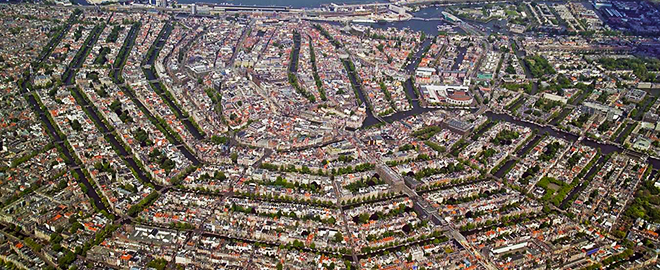
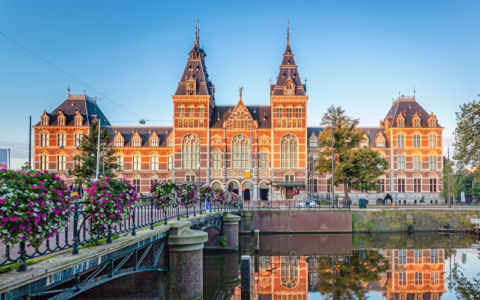
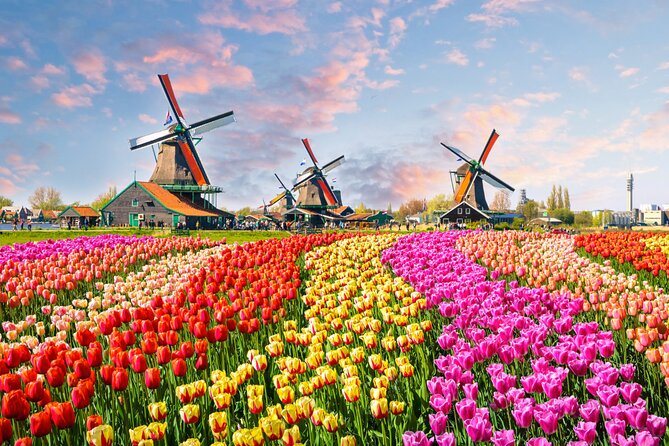

Hollandiáról
Hollandia Nyugat-Európában található ország. Fővárosa Amszterdam, amely a híres csatornáiról, múzeumairól és történelmi épületeiről ismert. Hollandia lakói számára a kerékpározás a mindennapi élet fontos része.

Amszterdam
Amszterdam Hollandia legnagyobb városa és egyik legfontosabb kulturális központja. A városban rengeteg csatorna található, amelyek között régi, keskeny házak sorakoznak. Amszterdam számos híres múzeumnak is otthont ad.


Tulipánok és szélmalmok
Hollandia világszerte híres a tulipánokról. Tavasszal hatalmas színes virágmezők borítják az ország egyes részeit. A szélmalmok szintén Hollandia jelképei közé tartoznak. Régen fontos szerepük volt a víz elvezetésében és különböző munkák elvégzésében.

Érdekességek
- Hollandia fővárosa Amszterdam.
- Az ország hivatalos pénzneme az euró.
- A kerékpár nagyon népszerű közlekedési eszköz.
- Hollandia híres a tulipántermesztésről.
- Az országban sok csatorna és szélmalom található.
- Hollandia területének egy része a tengerszint alatt fekszik.